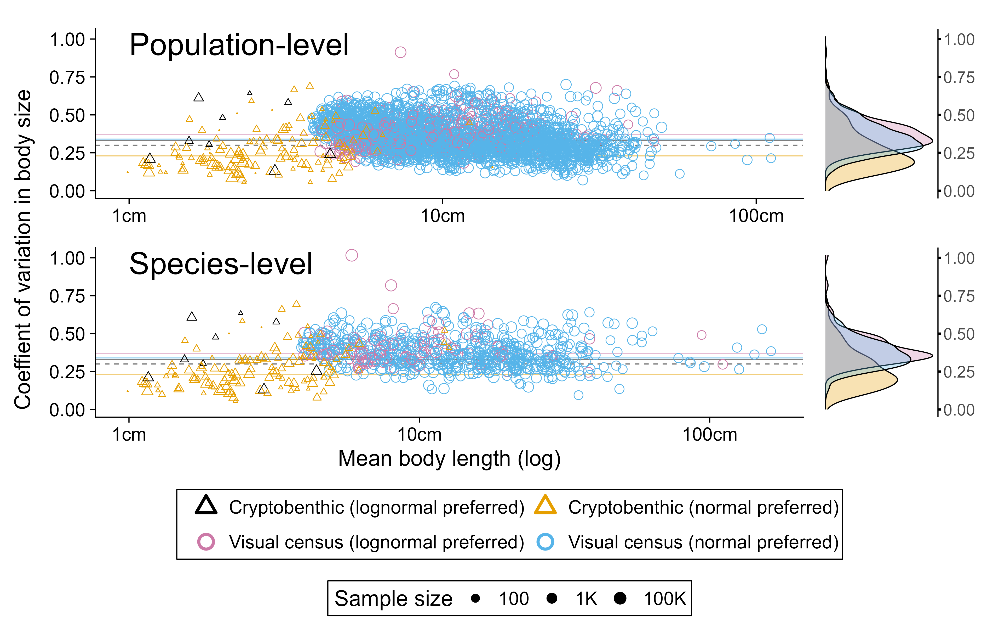

Code
library(tidyverse)
library(scales)
library(cowplot)
library(patchwork)
library(ggpubr)
library(modelr)R script to reconstruct figures
The following code will reconstruct the figures from the manuscript: Heather et al. (Submitted) “Consistency in species body size distributions across marine fishes”.
Loading the required packages.
library(tidyverse)
library(scales)
library(cowplot)
library(patchwork)
library(ggpubr)
library(modelr)Loading the required data.
read_data <- function(str) read_csv(paste0("fig_data/", str), show_col_types = FALSE)
# Data for main figures
fig1_data_fits <- read_data("fig1_data_fits.csv")
fig1_data_main <- read_data("fig1_data_main.csv")
fig2_data_pop <- read_data("fig2_data_pop.csv")
fig2_data_spp <- read_data("fig2_data_spp.csv")
fig3_data <- read_data("fig3_data.csv")
fig3_data_ks <- read_data("fig3_data_ks.csv")
fig4_data <- read_data("fig4_data.csv")
fig4_data_sample <- read_data("fig4_data_sample.csv")
# Data for supplementary figures
ED_fig1_data <- read_data("ED_fig1_data.csv")
ED_fig2_data <- read_data("ED_fig2_data.csv")
ED_fig3_data <- read_data("ED_fig3_data.csv")
ED_fig5_data <- read_data("ED_fig5_data.csv")
ED_fig7_data <- read_data("ED_fig7_data.csv")
ED_fig8_data <- read_data("ED_fig8_data.csv")
ED_fig9_data <- read_data("ED_fig9_data.csv")fig1a <-
fig1_data_fits %>%
bind_rows(tibble(col = "dummy_var")) %>% # needed for legend
ggplot(aes(x = scaled_size,
y = scaled_n,
group = file)) +
geom_line(aes(y = scaled_n,
group = population,
colour = col),
alpha = 0.1,
data = fig1_data_main %>%
mutate(col = case_when(
normal_better ~ rgb(181, 144, 19,
maxColorValue=255),
!normal_better ~ rgb(29, 84, 128,
maxColorValue=255),
TRUE ~ "grey80"),
lty = case_when(normal_better ~ "solid",
!normal_better ~ "solid",
TRUE ~ "dashed"),
lwd = case_when(normal_better ~ 2,
!normal_better ~ 2,
TRUE ~ 0.5)) ) +
geom_line(col = "black", lwd = 3,
data = fig1_data_fits %>%
filter(file %in% c("normal", "lognormal"))) +
geom_line(aes(col = col,
lty = lty,
linewidth = lwd)) +
scale_x_continuous(label = label_number(suffix = "x")) +
scale_color_identity(labels = c(
"Observed (Normal preferred)",
"Observed (Lognormal preferred)",
"Normal fit",
"Lognormal fit",
"13 protist species"
),
guide = "legend") +
scale_linetype_identity() +
scale_linewidth_identity() +
theme_cowplot(20) +
theme(legend.position = c(1,1),
legend.justification = c(1,1),
legend.title = element_blank(),
plot.margin = margin(10, 20, 10, 10)) +
labs(
x = "Body size relative to mean size",
y = "Abundance relative to max"
) +
guides(col = guide_legend(
override.aes = list(lty = c(1, 1, 1, 1, 2),
linewidth = c(0.3, 0.3, 3, 3, 0.5),
colour = c(rgb(181, 144, 19, maxColorValue=255),
rgb(29, 84, 128, maxColorValue=255),
rgb(181, 144, 19, maxColorValue=255),
rgb(29, 84, 128, maxColorValue=255),
"black"),
alpha = 1),
label.position = "left"))
# getting a random selection of species
out <- c()
for(i in 1:10) {
set.seed(1)
out <- c(out, sample(((320*(i-1))+1):((320*(i-1)+1)+320), 1))
}
range_bodysizes <-
fig1_data_main %>%
filter(population %in% {fig1_data_main %>% filter(model_fit) %>% pull(population)}) %>%
select(population, mean_size) %>%
distinct() %>%
arrange(mean_size) %>%
rownames_to_column("size_num") %>%
filter(size_num %in% out)
set.seed(1)
cbf_samples <-
fig1_data_main %>%
filter(population_n > 100) %>%
filter(dat=="cbf") %>%
select(population, mean_size) %>%
distinct() %>%
arrange(mean_size) %>%
rownames_to_column("size_num") %>%
filter(size_num %in% sample(1:nrow(.), 2))
extra <-
tibble(species = c(range_bodysizes$population,
cbf_samples$population) %>%
str_extract(pattern = ".*(?=__)")) %>%
filter(species %in% {fig1_data_main %>% filter(vector_icon) %>% pull(species)})
fig1b <-
fig1_data_main %>%
filter(population %in% c(range_bodysizes$population, cbf_samples$population)) %>%
mutate(highlight_spp = species %in% extra$species) %>%
ggplot() +
geom_line(aes(x = scaled_size,
y = scaled_n,
col = dat,
group = population),
alpha = 0.5,
linewidth = 1) +
geom_line(aes(x = scaled_size,
y = scaled_n,
col = dat,
group = population),
data = . %>% filter(highlight_spp),
linewidth = 1.5) +
scale_x_continuous(label = label_number(suffix = "x")) +
scale_color_manual(values = c("rls" = "#56B4E9",
"cbf" = "#E69F00"),
labels = c("rls" = "Visual census",
"cbf" = "Cryptobenthic specimen collection")) +
theme_cowplot(20) +
theme(legend.position = c(1,1),
legend.justification = c(1,1),
legend.title = element_blank()) +
labs(
x = "Body size relative to mean size",
y = "Abundance relative to max"
) +
guides(col = guide_legend(label.position = "left"))
fig1 <-
fig1a +
fig1b +
plot_layout(ncol = 1) +
plot_annotation(tag_levels = 'A')
ggsave(filename = "ms_figs/scaling_distributions.png",
plot = fig1,
height = 25,
width = 30,
units = "cm",
create.dir = TRUE)
inc_bimodal <- FALSE
inc_fished <- TRUE
main_plot <- function(.data) {
.data %>%
ggplot() +
aes(
x = mean_size,
y = cov_pref,
pch = col
) +
geom_hline(yintercept = 0.30, lty = 2, col = "black", alpha = 0.5) +
geom_hline(yintercept = 0.34, lty = 1, col = "#56B4E9", alpha = 0.5) +
geom_hline(yintercept = 0.37, lty = 1, col = "#CC79A7", alpha = 0.5) +
geom_hline(yintercept = 0.23, lty = 1, col = "#E69F00", alpha = 0.5) +
geom_hline(yintercept = 0.33, lty = 1, col = "#000000", alpha = 0.5) +
geom_point(alpha = 1,
aes(col = col,
size = (population_n %>% log10()))) +
geom_point(col = "red",
pch = 4,
size = 2,
data = .data %>% filter(bimodal)) +
scale_size_continuous(range = c(0.1,5),
breaks = c(2,3,5),
labels = c("100", "1K", "100K"),
transform = "log10",
name = "Sample size") +
scale_x_continuous(transform = "log10",
labels = label_number(suffix="cm"),
limits = range(.data$mean_size)) +
scale_shape_manual(
values = c(
"rls_norm" = 21,
"rls_lnorm" = 21,
"cbf_norm" = 24,
"cbf_lnorm" = 24),
label = c(
"rls_norm" = "Visual census (normal preferred)",
"rls_lnorm" = "Visual census (lognormal preferred)",
"cbf_norm" = "Cryptobenthic (normal preferred)",
"cbf_lnorm" = "Cryptobenthic (lognormal preferred)")) +
scale_color_manual(values = c(
"rls_norm" = "#56B4E9",
"rls_lnorm" = "#CC79A7",
"cbf_norm" = "#E69F00",
"cbf_lnorm" = "#000000"),
label = c(
"rls_norm" = "Visual census (normal preferred)",
"rls_lnorm" = "Visual census (lognormal preferred)",
"cbf_norm" = "Cryptobenthic (normal preferred)",
"cbf_lnorm" = "Cryptobenthic (lognormal preferred)")) +
labs(x = "Mean body length (log)",
y = "Coefficient of variation in body size") +
theme_cowplot(20) +
theme(legend.position = "none",
axis.title.y = element_blank()
)
}
side_plot <- function(.data, ylim){
.data %>%
ggplot() +
aes(
x = cov_pref,
fill = col,
) +
scale_fill_manual(values = c(
"rls_norm" = "#56B4E9",
"rls_lnorm" = "#CC79A7",
"cbf_norm" = "#E69F00",
"cbf_lnorm" = "#000000"),
label = c(
"rls_norm" = "Visual census (normal preferred)",
"rls_lnorm" = "Visual census (lognormal preferred)",
"cbf_norm" = "Cryptobenthic (normal preferred)",
"cbf_lnorm" = "Cryptobenthic (lognormal preferred)"))+
geom_density(alpha = 0.3, col = "black") +
scale_x_continuous(position = "top",
limits = c(0, ylim)) +
coord_flip() +
theme(legend.position = "none",
plot.background = element_rect(fill = "white"),
panel.background = element_rect(fill = "white"),
axis.line.x = element_blank(),
axis.text.x = element_blank(),
axis.title.x = element_blank(),
axis.ticks.x = element_blank(),
axis.line.y = element_line(),
axis.title.y = element_blank(),
axis.text.y = element_text(margin = margin(t = 0,
r = 0,
b = 0,
l = 10),
size = 15),
axis.ticks = element_line(linewidth = 1, colour = "black"))
}
pop_data <-
fig2_data_pop %>%
{if(inc_fished) . else filter(., !fished)} %>%
{if(inc_bimodal) . else filter(., !bimodal)}
spp_data <-
fig2_data_spp %>%
{if(inc_fished) . else filter(., !fished)} %>%
{if(inc_bimodal) . else filter(., !bimodal)}
plot_ylim <-
max(layer_scales(
main_plot(pop_data))$y$range$range,
layer_scales(
main_plot(spp_data))$y$range$range)
fig2_main <-
main_plot(pop_data) +
theme(axis.title.x = element_blank()) +
ylim(0, plot_ylim) +
annotate("text",
x = 1,
hjust = 0,
y = plot_ylim*0.95,
label = "Population-level",
size = 10) +
side_plot(pop_data %>%
filter(col != "cbf_lnorm"),
plot_ylim) +
main_plot(spp_data) + ylim(0, plot_ylim) +
annotate("text",
x = 1,
hjust = 0,
y = plot_ylim*0.95,
label = "Species-level",
size = 10) +
side_plot(spp_data %>% filter(col != "cbf_lnorm"),
plot_ylim) +
plot_layout(design = {"
AAAAAAB
AAAAAAB
CCCCCCD
CCCCCCD"
})
fig2_legend <-
ggpubr::as_ggplot(
ggpubr::get_legend(
main_plot(pop_data) +
theme(axis.title = element_text(),
axis.text = element_text()) +
guides(colour = guide_legend(override.aes = list(size=5, stroke = 2),
nrow = 2,
byrow = TRUE,
title = element_blank()),
pch = guide_legend(nrow = 2,
byrow = TRUE,
title = element_blank())) +
theme(legend.position = "bottom",
legend.box = "vertical",
legend.justification = c(0.5,0.5),
legend.background = element_rect(color = "black"),
legend.margin=margin(5,5,5,6),
legend.title = element_text()),
))
fig2_yaxis <-
wrap_elements(fig2_main) +
labs(tag = "Coeffient of variation in body size") +
theme(
plot.tag = element_text(size = 20, angle = 90),
plot.tag.position = "left"
)
fig2 <-
fig2_yaxis +
fig2_legend +
plot_layout(design = {"
AAAAAAA
AAAAAAA
AAAAAAA
AAAAAAA
#BBBBB#"
})
ggsave(filename = "ms_figs/cv_meansize.png",
plot = fig2,
height = 20,
width = 20*1.618,
units = "cm",
create.dir = TRUE)
make_plot <- function(data, title){
data %>%
ggplot(aes(x = size_class,
y = p_obs,
width = size_max-size_min)) +
facet_wrap(~species, ncol = 2, scales = "free") +
geom_vline(aes(xintercept = mean_size), lty = 2, linewidth = 1.5) +
geom_rect(aes(xmin = size_min, xmax = size_max, ymin = 0, ymax = p_obs),
alpha = 0.2,
col = "black",
fill = "grey70") +
# geom_point(aes(col = name, y = value, alpha = alp)) +
geom_path(aes(col = name, y = value, alpha = alp, lty=lty), linewidth = 2) +
scale_alpha_identity()+
scale_linetype_identity() +
scale_colour_manual(values = c("p_norm" = rgb(181, 144, 19, maxColorValue=255),
"p_lnorm" = rgb(29, 84, 128, maxColorValue=255)))+
theme_cowplot(20) +
scale_y_continuous(label = label_percent())+
scale_x_continuous(label = label_number()) +
labs(x = "Length class (cm)",
y = "Proportion in length class") +
theme(legend.position = "none",
strip.background = element_rect(
colour = "black",
fill = "white"),
strip.text = element_text(face = "italic"),
plot.title = element_text(hjust = 0.5)) +
ggtitle(label = title)
}
fig3a <-
fig3_data %>%
filter(pref == "lnorm_pref") %>%
make_plot("Strong preference for lognormal")
fig3b <-
fig3_data %>%
filter(pref == "no_pref") %>%
make_plot("No preference for normal or lognormal")
fig3c <-
fig3_data %>%
filter(pref == "norm_pref") %>%
make_plot("Strong preference for normal")
ks_curve <-
fig3_data_ks %>%
pivot_longer(cols = contains("ks"),
values_to = "ks",
names_to = "dist") %>%
summarise(mean_ks = mean(ks),
median_ks = median(ks),
lwr_ks = quantile(ks, 0.025),
upr_ks = quantile(ks, 0.875),
.by = c(c, dist)) %>%
ggplot(aes(x = c,
y = mean_ks,
color = dist)) +
geom_line(linewidth = 2, alpha = 0.8) +
scale_color_manual(values = c("norm_ks" = rgb(181, 144, 19, maxColorValue=255),
"lnorm_ks" = rgb(29, 84, 128, maxColorValue=255),
"pref_ks" = "pink"),
labels = c("norm_ks" = "Normal",
"lnorm_ks" = "Lognormal", "pref_ks" = "Preferred")) +
guides(color = guide_legend(override.aes = list(alpha = 1) ) ) +
scale_y_continuous() +
labs(x = "Assumed Coefficient of Variation",
y = "Dissimilarity (K-S statistic)") +
theme_cowplot(20) +
theme(legend.position = c(0.95,0.05),
legend.justification = c(1,0),
legend.title = element_blank(),
plot.background = element_rect(color = "transparent"))
fig3 <-
fig3a +
fig3b +
fig3c +
ks_curve +
plot_annotation(tag_levels = 'A')
ggsave(filename = "ms_figs/ks_curve.png",
plot = fig3,
height = 25,
width = 25*1.618,
units = "cm")
make_fig4 <- function(data, spp_select){
dat1 <-
data %>%
filter(species == spp_select)
dat1 %>%
filter(name != "p_lnorm") %>%
filter(name != "rls_obs") %>%
mutate(species = fct_reorder(species, std_mk)) %>%
ggplot(aes(x = size_class,
y = value)) +
geom_rect(aes(xmin = size_min,
xmax = size_max,
ymin = 0,
ymax = value,
fill = size_10),
col = "black",
data = dat1 %>%
filter(name == "rls_obs") %>%
mutate(size_10 = case_when(size_class >= 10 ~ "large",
TRUE ~ "small"))) +
scale_fill_manual(values = c("large" = "grey70",
"small" = "grey90"),
labels = c("large" = "Observed (Length \U2265 10cm)",
"small" = "Observed (Length \U003C 10cm)")) +
scale_color_manual(values = c("p_norm" = rgb(181, 144, 19, maxColorValue=255),
"lbspr" = rgb(148, 31, 36, maxColorValue=255),
"lbspr_mk15" = rgb(70, 172, 200, maxColorValue=255)),
labels = c("lbspr" = "LBSPR (estimate)",
"lbspr_mk15" = "LBSPR (M/k = 1.5, estimate)",
"p_norm" = "Normal (estimate)")) +
geom_vline(xintercept = 8.75, lty = 2) +
geom_path(aes(col = name), linewidth = 2, alpha = 0.8) +
geom_text(aes(x = Inf, y = Inf, label = paste("M/k =", std_mk, "\n",
"L\U221E =", std_linf, "cm")),
hjust = 1,
vjust = 1.2,
data = mk_text %>% filter(species == spp_select)) +
scale_x_continuous(limits = c(0, NA), label = label_number()) +
scale_y_continuous(label = label_percent()) +
facet_wrap(~fct_reorder(species, std_mk), scales = "free") +
labs(x = "Length class (cm)",
y = "Proportion") +
theme_cowplot() +
theme(legend.position = "none",
strip.background = element_rect(fill = "transparent"),
strip.text = element_text(face = "italic"),
axis.title.y = element_blank(),
axis.title.x = element_blank())
}
ks_data <-
fig4_data %>%
pivot_wider(names_from = name, values_from = value)
ks_fig_data <-
ks_data %>%
summarise(ks_norm = ks.test(x = rls_obs,
y = p_norm)$statistic,
ks_lnorm = ks.test(x = rls_obs,
y = p_lnorm)$statistic,
ks_lbspr = ks.test(x = rls_obs,
y = lbspr)$statistic,
ks_lbspr_mk15 = ks.test(x = rls_obs,
y = lbspr_mk15)$statistic,
.by = species) %>%
pivot_longer(cols = contains("ks_"))
ks_fig_data_rmsmall <-
ks_data %>%
filter(size_class >= 10) %>%
summarise(ks_norm = ks.test(x = p_norm,
y = rls_obs)$statistic,
ks_lnorm = ks.test(x = p_lnorm,
y = rls_obs)$statistic,
ks_lbspr = ks.test(x = lbspr,
y = rls_obs)$statistic,
ks_lbspr_mk15 = ks.test(x = rls_obs,
y = lbspr_mk15)$statistic,
.by = species) %>%
pivot_longer(cols = contains("ks_"))
fig4_violins <-
ks_fig_data_rmsmall %>%
rename(rmsmall = value) %>%
left_join(ks_fig_data %>%
rename(withsmall = value)) %>%
pivot_longer(cols = contains("small"),
names_to = "inc_small") %>%
mutate(inc_small = case_when(inc_small == "rmsmall" ~ "Exluding sizes < 10cm",
inc_small == "withsmall" ~ "All size classes")) %>%
filter(name != "ks_lnorm") %>%
ggplot(aes(y = value, x = name)) +
geom_violin()+
geom_boxplot(width = 0.1) +
facet_wrap(~inc_small, nrow=2) +
scale_x_discrete(labels = c("ks_lbspr" = "LBSPR",
"ks_lbspr_mk15" = "LBSPR \n (M/k = 1.5)",
"ks_norm" = "CV = 0.34")) +
labs(y = "Dissimilarity to observed") +
theme_cowplot(17) +
theme(legend.position = "none",
panel.grid.major.y = element_line(colour = "grey80"),
strip.background = element_rect(fill = "transparent", colour = "black"),
axis.title.x = element_blank())
arranged_species <- fig4_data_sample %>% arrange(std_mk) %>% pull(species) %>% unique()
mk_text <-
fig4_data_sample %>%
filter(p_obs != 0) %>%
summarise(max_x = max(size_class, na.rm = TRUE),
max_y = max(c(p_obs, p_lbspr), na.rm = TRUE),
std_mk = round(unique(std_mk), 2),
std_linf = round(unique(std_linf),0),
.by = species)
for(i in 1:length(arranged_species)){
if(i==1) {
fig4_main <- make_fig4(fig4_data,
spp_select = arranged_species[i]) +
theme(legend.position = "none")
} else if(i %in% c(6,7)) {
fig4_main <-
fig4_main +
make_fig4(fig4_data,
spp_select = arranged_species[i]) +
theme(axis.title.x = element_text())
} else if(i == max(length(arranged_species))) {
fig4_main <-
fig4_main +
make_fig4(fig4_data, spp_select = arranged_species[i]) +
theme(legend.position = "bottom")
} else {
fig4_main <-
fig4_main +
make_fig4(fig4_data, spp_select = arranged_species[i]) +
theme(legend.position = "none")
}
}
fig4_legend <-
{{make_fig4(fig4_data,
spp_select = arranged_species[i]) +
theme(legend.position = "bottom", legend.title = element_blank(), legend.justification = 0.5) } %>%
get_legend() %>%
as_ggplot()}
fig4 <-
fig4_main +
fig4_violins +
fig4_legend +
plot_layout(design =
"abc
deh
fgh
iii
", heights = c(4,4,4,1)) +
plot_annotation(tag_levels = "A")
ggsave(filename = "ms_figs/lbspr_comparison.png",
plot = fig4,
height = 20,
width = 20*1.618,
units = "cm")
logit_mod <-
ED_fig1_data %>%
mutate(normal_better = as.numeric(normal_better)) %>%
glm(normal_better ~ pop_mean_size, data = ., family = "binomial")
logit_plot <-
ED_fig1_data %>%
ggplot(aes(
x = pop_mean_size,
y = normal_better %>% as.numeric)) +
geom_point(alpha = 0.3, pch = 3, size = 3) +
geom_smooth(method = "glm",
method.args = list(family = "binomial"),
col = "darkblue", fill = "darkblue") +
scale_x_continuous(label = label_number(suffix = "cm")) +
theme_cowplot(20) +
labs(
x = "Mean body length",
y = "Probability Normal preferred"
)
ggsave(filename = "ms_figs/logistic.png",
plot = logit_plot,
height = 15,
width = 15*1.618,
units = "cm")p_binning <-
ED_fig2_data %>%
ggplot() +
aes(
x = mean_size,
xend = mean_size,
y = cont,
yend = binned
) +
geom_hline(yintercept = median(ED_fig2_data$binned, na.rm = TRUE), lty = 1) +
geom_hline(yintercept = median(ED_fig2_data$cont, na.rm = TRUE), lty = "35") +
geom_segment(arrow = arrow(length = unit(0.3, "cm"))) +
scale_x_log10(label = label_number(suffix = "cm")) +
theme_cowplot(20) +
labs(x = "Mean body length (log)",
y = "CV value (before and after binning)")
ggsave(filename = "ms_figs/binning_effect.png",
plot = p_binning,
height = 15,
width = 15*1.618,
units = "cm")## ED Fig. 3
# Must have run the functions in Figure 2
plot_ylim <-
max(layer_scales(
main_plot(ED_fig3_data))$y$range$range)
ppp <-
main_plot(ED_fig3_data) +
theme(axis.title.x = element_blank()) +
ylim(0, plot_ylim) +
annotate("text",
x = 1,
hjust = 0,
y = plot_ylim*0.95,
label = "Ecoregion-level",
size = 10) +
side_plot(ED_fig3_data %>% filter(col != "cbf_lnorm"),
plot_ylim) +
plot_layout(design = {"
AAAAAAB
AAAAAAB"
})
leg <-
ggpubr::as_ggplot(
get_legend(
main_plot(ED_fig3_data) +
theme(axis.title = element_text(),
axis.text = element_text()) +
guides(colour = guide_legend(override.aes = list(size=5, stroke = 2),
nrow = 2,
byrow = TRUE,
title = element_blank()),
pch = guide_legend(nrow = 2,
byrow = TRUE,
title = element_blank())) +
theme(legend.position = "bottom",
legend.box = "vertical",
legend.justification = c(0.5,0.5),
legend.background = element_rect(color = "black"),
legend.margin=margin(5,5,5,6),
legend.title = element_text())))
cc <-
wrap_elements(ppp) +
labs(tag = "Coeffient of variation in body size") +
theme(
plot.tag = element_text(size = 20, angle = 90),
plot.tag.position = "left"
)
p_simple <-
cc +
leg +
plot_layout(design = {"
AAAAAAA
AAAAAAA
#BBBBB#"
})
ggsave(filename = "ms_figs/meansize_cv_ecoregion.png",
plot = p_simple,
height = 15,
width = 20*1.618,
units = "cm")inc_fished <- FALSE
inc_bimodal <- FALSE
pop_data <-
fig2_data_pop %>%
{if(inc_fished) . else filter(., !fished)} %>%
{if(inc_bimodal) . else filter(., !bimodal)}
spp_data <-
fig2_data_spp %>%
{if(inc_fished) . else filter(., !fished)} %>%
{if(inc_bimodal) . else filter(., !bimodal)}
plot_ylim <-
max(layer_scales(
main_plot(pop_data))$y$range$range,
layer_scales(
main_plot(spp_data))$y$range$range)
ED_fig4_main <-
main_plot(pop_data) +
theme(axis.title.x = element_blank()) +
ylim(0, plot_ylim) +
annotate("text",
x = 1,
hjust = 0,
y = plot_ylim*0.95,
label = "Population-level",
size = 10) +
side_plot(pop_data %>%
filter(col != "cbf_lnorm"),
plot_ylim) +
main_plot(spp_data) + ylim(0, plot_ylim) +
annotate("text",
x = 1,
hjust = 0,
y = plot_ylim*0.95,
label = "Species-level",
size = 10) +
side_plot(spp_data %>% filter(col != "cbf_lnorm"),
plot_ylim) +
plot_layout(design = {"
AAAAAAB
AAAAAAB
CCCCCCD
CCCCCCD"
})
ED_fig4_legend <-
ggpubr::as_ggplot(
ggpubr::get_legend(
main_plot(pop_data) +
theme(axis.title = element_text(),
axis.text = element_text()) +
guides(colour = guide_legend(override.aes = list(size=5, stroke = 2),
nrow = 2,
byrow = TRUE,
title = element_blank()),
pch = guide_legend(nrow = 2,
byrow = TRUE,
title = element_blank())) +
theme(legend.position = "bottom",
legend.box = "vertical",
legend.justification = c(0.5,0.5),
legend.background = element_rect(color = "black"),
legend.margin=margin(5,5,5,6),
legend.title = element_text()),
))
ED_fig4_yaxis <-
wrap_elements(ED_fig4_main) +
labs(tag = "Coeffient of variation in body size") +
theme(
plot.tag = element_text(size = 20, angle = 90),
plot.tag.position = "left"
)
ED_fig4 <-
ED_fig4_yaxis +
ED_fig4_legend +
plot_layout(design = {"
AAAAAAA
AAAAAAA
AAAAAAA
AAAAAAA
#BBBBB#"
})
ggsave(filename = "ms_figs/cv_meansize_rmfished.png",
plot = ED_fig4,
height = 20,
width = 20*1.618,
units = "cm",
create.dir = TRUE)bimod_plot <- function(data, nrow, fill_col){
ggplot(data) +
geom_rect(aes(
xmin = size_min,
xmax = size_max,
ymax = n,
ymin = 0
), fill = fill_col,
col = "black") +
facet_wrap(~pop_label,
nrow = nrow,
scales = "free_y") +
scale_x_continuous(labels = label_number(suffix = "cm")) +
labs(x = "Body length class",
y = "Count") +
theme_cowplot() +
theme(strip.background = element_rect(fill = "white", colour = "black"),
plot.title = element_text(hjust = 0.5))
}
p1 <-
ED_fig5_data %>%
filter(data == "rls", !is_bimodal) %>%
bimod_plot(nrow = 4,
fill_col = "#56B4E9") +
ggtitle("Unimodal examples (n = 4 of 3,169)")
p2 <-
ED_fig5_data %>%
filter(data == "rls", is_bimodal) %>%
bimod_plot(nrow = 4,
fill_col = "#56B4E9") +
ggtitle("Bimodal examples (n = 4 of 59)")
p3 <-
ED_fig5_data %>%
filter(data == "cbf", !is_bimodal) %>%
bimod_plot(nrow = 3,
fill_col = "#E69F00") +
ggtitle("Unimodal examples (n = 3 of 133)")
p4 <- ED_fig5_data %>%
filter(data == "cbf", is_bimodal) %>%
bimod_plot(nrow = 3,
fill_col = "#E69F00") +
ggtitle("Bimodal distributions (n = 3 of 3)")
bimod_dists <-
p1 +
p2 +
p3 +
p4 +
plot_layout(ncol= 2) +
plot_annotation(tag_levels = "A")
ggsave(filename = "ms_figs/bimodal.png",
plot = bimod_dists,
height = 20,
width = 15)ED_fig6 <-
fig2_data_spp %>%
filter(!bimodal) %>%
ggplot() +
aes(
x = mean_size,
y = cov_pref,
pch = dat,
) +
geom_point(alpha = 1, size = 2, col = "grey80") +
geom_point(alpha = 1, size = 2, col="black",
data = fig2_data_spp %>%
filter(species %in% c("Scorpis aequipinnis",
"Cheilodactylus spectabilis"))) +
geom_point(alpha = 0.4, size = 2, col="red",
data = fig2_data_spp %>%
filter(str_detect(species, "Eviota"))) +
geom_point(alpha = 1, size = 2, col="red",
data = fig2_data_spp %>%
filter(str_detect(species, "Eviota queenslandica"))) +
scale_x_continuous(trans = "log10",
labels = label_number(suffix="cm")) +
scale_shape_manual(
values = c("rls" = 21, "cbf" = 24),
labels = c("rls" = "Visual census",
"cbf" = "Cryptobenthic (exhaustive)")) +
scale_color_manual(
values = c("normal" = rgb(181, 144, 19, maxColorValue=255),
"lognormal" = rgb(29, 84, 128, maxColorValue=255)),
labels = c("normal" = "Normal preferred",
"lognormal" = "Lognormal preferred")) +
labs(x = "Mean body size (log)",
y = "Coefficient of variation in body size") +
theme_cowplot(20) +
theme(legend.position = "none")
ggsave(filename = "ms_figs/cv_meansize_spphighlight.png",
plot = ED_fig6,
height = 20,
width = 20*1.618,
units = "cm")ED_fig7_eq <- lm(log(mean_size) ~ log(std_linf), data = ED_fig7_data)
ED_fig7 <-
ED_fig7_data %>%
add_predictions(ED_fig7_eq) %>%
ggplot(aes(x = std_linf,
y = mean_size)) +
geom_point() +
geom_line(aes(y = exp(pred)), col = "red") +
theme_cowplot() +
scale_x_continuous(label = label_number(suffix = "cm")) +
scale_y_continuous(label = label_number(suffix = "cm")) +
labs(x = "Asymptotic length (literature)",
y = "Mean length (observed)")
ggsave(filename = "ms_figs/linf_lmu.png",
plot = ED_fig7,
height = 10,
width = 10*1.618,
units = "cm")difference_plots_all_40cm <-
ED_fig8_data %>%
mutate(obs_minus_exp = p_obs-p_lbspr) %>%
ggplot(aes(x = size_class,
y = obs_minus_exp)) +
geom_hline(yintercept = 0, col = "red") +
geom_path(alpha = 0.1, aes(group = species)) +
geom_point(alpha = 0.1) +
stat_smooth() +
scale_x_continuous(breaks = c(fig4_data$size_class),
limits = c(0, 40)) +
scale_y_continuous(label = label_number())+
labs(x = "Visual census length classes (cm)",
y = "Observed minus LBSPR") +
annotate(geom = "text", x = Inf,
y = -Inf,
label = "Observed < LBSPR",
hjust = 1.1,
vjust = -0.5,
size = 8) +
annotate(geom = "text",
x = Inf,
y = Inf,
label = "Observed > LBSPR",
hjust = 1.1,
vjust = 1.5,
size = 8) +
theme_cowplot()
ggsave(filename = "ms_figs/obs_minus_lbspr.png",
plot = difference_plots_all_40cm,
height = 15,
width = 15*1.618,
units = "cm")ED_fig9 <-
ED_fig9_data %>%
ggplot(aes(x = as.factor(mincount), y = cv_50, col = mod)) +
geom_violin() +
facet_wrap(datatype~., scales = "free_x") +
scale_y_continuous(limits = c(0, 1))+
geom_text(aes(label = paste("n =", max_n)), y = 0.0, show.legend = FALSE, col = "black",
data =
ED_fig9_data %>%
count(datatype, mod, mincount) %>%
summarise(max_n = max(n),
.by = c(datatype, mincount))) +
scale_color_manual(values = c("normal" = rgb(181, 144, 19, maxColorValue=255),
"lognormal" = rgb(29, 84, 128, maxColorValue=255)),
labels = c("normal" = "Normal",
"lognormal" = "Lognormal")) +
labs(x = "Minimum population size (# individuals)",
y = "Median CV estimate") +
theme_cowplot(20) +
theme(legend.position = c(1,1),
legend.justification = c(1,1.1),
legend.title = element_blank(),
plot.margin = margin(10, 50, 10, 10),
strip.background = element_rect(fill = "white", colour = "black"))
ggsave(filename = "ms_figs/mincount_sensitivity.png",
plot = ED_fig9,
height = 15,
width = 25,
units = "cm")inc_bimodal <- TRUE
inc_fished <- TRUE
pop_data <-
fig2_data_pop %>%
{if(inc_fished) . else filter(., !fished)} %>%
{if(inc_bimodal) . else filter(., !bimodal)}
spp_data <-
fig2_data_spp %>%
{if(inc_fished) . else filter(., !fished)} %>%
{if(inc_bimodal) . else filter(., !bimodal)}
plot_ylim <-
max(layer_scales(
main_plot(pop_data))$y$range$range,
layer_scales(
main_plot(spp_data))$y$range$range)
ED_fig10_main <-
main_plot(pop_data) +
theme(axis.title.x = element_blank()) +
ylim(0, plot_ylim) +
annotate("text",
x = 1,
hjust = 0,
y = plot_ylim*0.95,
label = "Population-level",
size = 10) +
side_plot(pop_data %>%
filter(col != "cbf_lnorm"),
plot_ylim) +
main_plot(spp_data) + ylim(0, plot_ylim) +
annotate("text",
x = 1,
hjust = 0,
y = plot_ylim*0.95,
label = "Species-level",
size = 10) +
side_plot(spp_data %>% filter(col != "cbf_lnorm"),
plot_ylim) +
plot_layout(design = {"
AAAAAAB
AAAAAAB
CCCCCCD
CCCCCCD"
})
ED_fig10_legend <-
ggpubr::as_ggplot(
ggpubr::get_legend(
main_plot(pop_data) +
theme(axis.title = element_text(),
axis.text = element_text()) +
guides(colour = guide_legend(override.aes = list(size=5, stroke = 2),
nrow = 2,
byrow = TRUE,
title = element_blank()),
pch = guide_legend(nrow = 2,
byrow = TRUE,
title = element_blank())) +
theme(legend.position = "bottom",
legend.box = "vertical",
legend.justification = c(0.5,0.5),
legend.background = element_rect(color = "black"),
legend.margin=margin(5,5,5,6),
legend.title = element_text()),
))
ED_fig10_yaxis <-
wrap_elements(ED_fig10_main) +
labs(tag = "Coeffient of variation in body size") +
theme(
plot.tag = element_text(size = 20, angle = 90),
plot.tag.position = "left"
)
ED_fig10 <-
ED_fig10_yaxis +
ED_fig10_legend +
plot_layout(design = {"
AAAAAAA
AAAAAAA
AAAAAAA
AAAAAAA
#BBBBB#"
})
ggsave(filename = "ms_figs/cv_meansize_incbimod.png",
plot = ED_fig10,
height = 20,
width = 20*1.618,
units = "cm",
create.dir = TRUE)